← Torna alla parte generale · Guide da terminale: Claude Code · Codex
Le guide a Claude Code e a Codex usano il terminale. Non è l’unica strada. Entrambi gli agenti esistono anche come app desktop, che fanno lo stesso lavoro in locale: si sceglie una cartella del computer, e l’agente legge i file, scrive ed esegue codice (R, Python, Quarto, Git…), usa le vostre skill e i file di istruzioni del progetto (CLAUDE.md, AGENTS.md), si collega ai connettori. La superpotenza è la stessa; cambia l’interfaccia.
Questa guida mostra le due app su Windows, a ottobre 2026: l’app Claude (versione 2.42304, scheda Code) e l’app ChatGPT nella sezione Codex (versione 26.1007, con account ChatGPT Edu). La cartella di prova e le richieste sono le stesse delle guide da terminale, così il confronto è diretto. Il dataset e la regressione sono un esempio giocattolo inventato da Claude, di sua iniziativa: dati simulati, senza alcun legame con ricerche o dati reali, miei o di altri (vedi la nota nella parte generale).
Obiettivi della guida
- Capire quando conviene l’app e quando il terminale.
- Aprire una cartella di lavoro e dare la prima richiesta.
- Trovare nei menu le stesse cose delle guide da terminale: modello, effort, permessi, plan.
- Usare quello che le app aggiungono: pannelli per modifiche, file, terminale e browser.
Terminale o app?
Io preferisco il terminale, per un motivo semplice. Non apro l’app dell’AI chiedendomi “oggi cosa facciamo con l’AI?”. Lavoro normalmente, sulle mie cartelle e sui miei file; quando mi accorgo che lì sarebbe utile un agente, apro il terminale in quella cartella (tasto destro → Apri nel terminale), scrivo claude o codex, e lui parte da dove sono io. L’agente entra nel mio lavoro, non il contrario.
Con le app il flusso è rovesciato: si apre l’app e ogni volta bisogna indicarle la cartella su cui lavorare. In Codex, poi, la cartella diventa un progetto dell’app, da creare e dare un nome prima di cominciare. Non è un dramma, ma per me è meno fluido.
Detto questo, le app hanno dei vantaggi veri:
- niente terminale: per chi non si trova a suo agio con la riga di comando, è l’ostacolo che sparisce;
- menu al posto dei comandi: modello, effort, permessi e modalità plan si scelgono con un clic, senza ricordare
/modeloShift+Tab; - pannelli laterali: le modifiche ai file (riga per riga, con i colori), l’albero dei file, un terminale vero e un browser integrato, tutti accanto alla conversazione;
- sessioni in ordine: le conversazioni passate restano nella barra laterale, raggruppate per cartella o progetto, e si riprendono con un clic;
- piccole comodità: commentare un piano selezionandone una parte, rispondere alle domande dell’agente con dei pulsanti, annullare un’intera modifica con Undo.
Le due strade non si escludono. La cartella è la stessa, i file sono gli stessi, le skill e i file di istruzioni pure: si può lavorare da terminale un giorno e dall’app il giorno dopo.
| Cosa | Da terminale | Nell’app Claude | Nell’app Codex |
|---|---|---|---|
| Cartella di lavoro | si apre il terminale lì | Scegli… → Apri cartella… | si crea un progetto con la cartella |
| Modello ed effort | /model, /effort |
menu in basso a destra | menu in basso a destra |
| Permessi e modalità | Shift+Tab, /permissions |
menu Auto in basso | menu Approve for me in basso |
| Piano prima di agire | modalità plan | modalità Piano | + → Plan mode |
| Vedere le modifiche | diff nel terminale | pannello Modifiche | View changes |
| Riprendere una sessione | claude -c, codex resume |
barra laterale | barra laterale |
Installazione
Claude. Si scarica l’app da claude.com/download (Windows e macOS) e si fa il login con il proprio account. In alto a sinistra ci sono due icone: la chat e Code (</>). Gli agenti sono in Code. Valgono gli stessi requisiti di Claude Code da terminale: serve almeno il piano Pro (vedi la parte generale sui costi).
Codex. L’app si trova sulla pagina ufficiale di Codex e, su Windows, nel Microsoft Store. Nella mia installazione il pacchetto si chiama Codex ma la finestra si presenta come ChatGPT, con Codex selezionato in alto a sinistra. Il login è quello di ChatGPT (qui un account Edu). Requisiti e limiti di utilizzo sono gli stessi di Codex da terminale.
Claude: la scheda Code
Scegliere la cartella
In basso, sotto la casella di testo, ci sono tre indicazioni: dove lavora l’agente (Questo computer, cioè in locale), su quale cartella, e in che modalità. Si clicca su Scegli… → Apri cartella… e si seleziona la cartella del progetto:
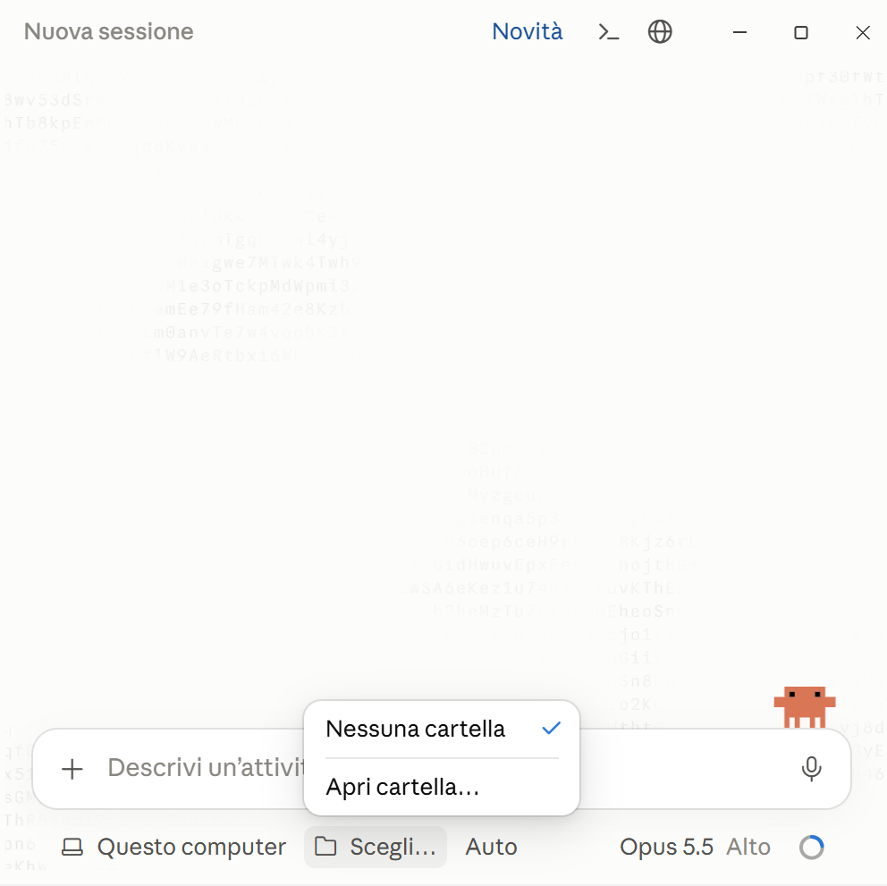
La prima richiesta
Stessa richiesta delle guide da terminale:
In questa cartella c’è dati_esame.csv. Dai un’occhiata ai dati, poi scrivi uno script R chiamato analisi.R che stima una regressione del voto su ore_studio, ansia e gruppo, eseguilo e spiegami i risultati in poche righe.
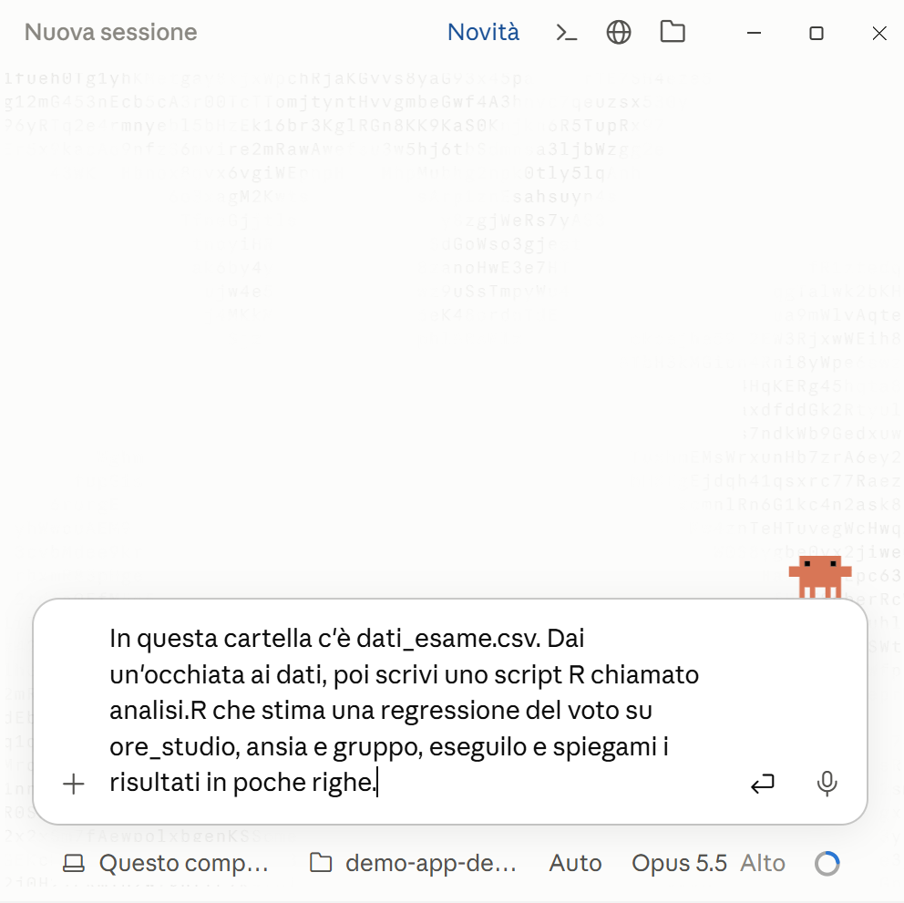
demo-app-desktop), modalità (Auto), modello ed effort (Opus 5.5 Alto)
Mentre lavora, Claude mostra la lista dei passi che si è dato e i comandi che sta eseguendo. La sessione compare nella barra laterale, sotto il nome della cartella:
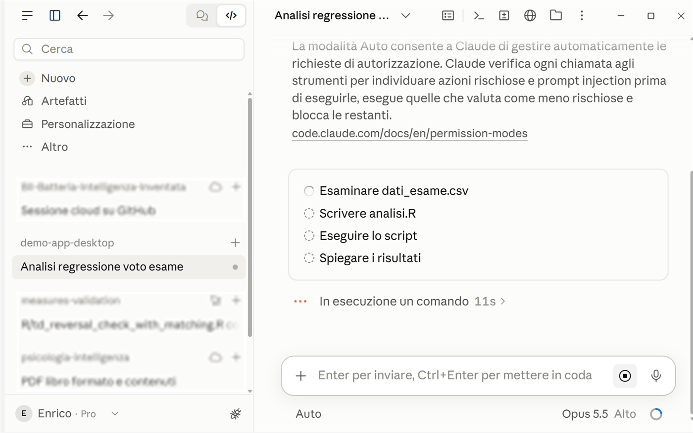
Il risultato è quello che si ottiene da terminale: analisi.R creato ed eseguito, risultati spiegati in poche righe. Stavolta Claude ha notato da solo un’altra particolarità dei dati simulati, il pavimento a 18 (molti voti esattamente al minimo), e ha aggiunto allo script un modello tobit come controllo. È un buon esempio del fatto che lo stesso agente, sulla stessa richiesta, non fa sempre le stesse scelte: ragione in più per leggere quello che produce.
Modalità, modello, effort
Le modalità sono le stesse del terminale. Al posto di Shift+Tab c’è un menu:
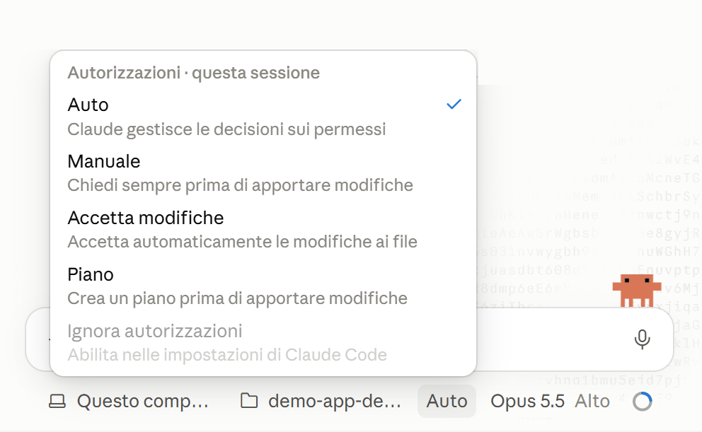
Il modello e l’effort (qui Impegno) si scelgono dal menu accanto:
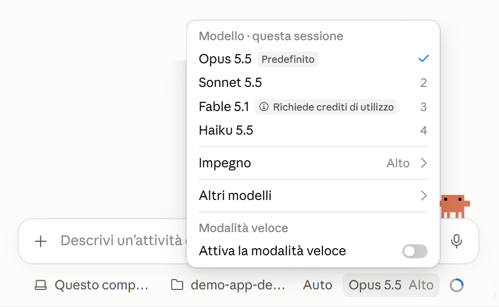
La casella di testo accetta anche i comandi che iniziano con / (lo dice lei stessa: Digita / per i comandi): chi viene dal terminale ritrova le sue abitudini.
I pannelli: dove l’app dà qualcosa in più
In alto a destra ci sono alcune icone che aprono pannelli accanto alla conversazione. Il primo riassume la sessione: su quale computer e cartella si lavora, il branch Git, quanto contesto è occupato, quanti connettori sono attivi, e quante righe sono state modificate, con un pulsante per fare il commit:
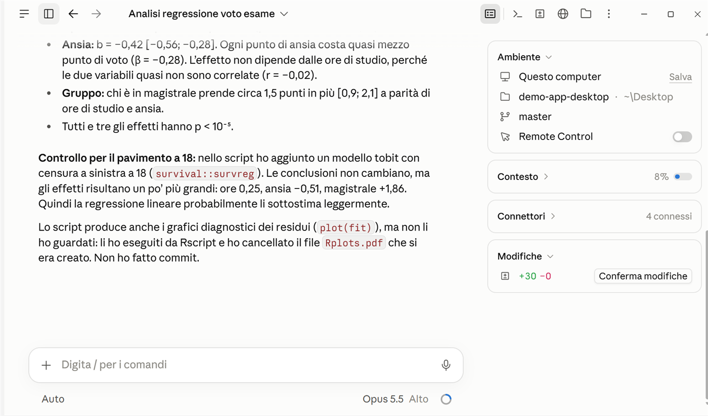
Il pannello delle modifiche mostra riga per riga cosa è cambiato nei file. È la cosa che da terminale si legge peggio, e che qui si legge meglio:
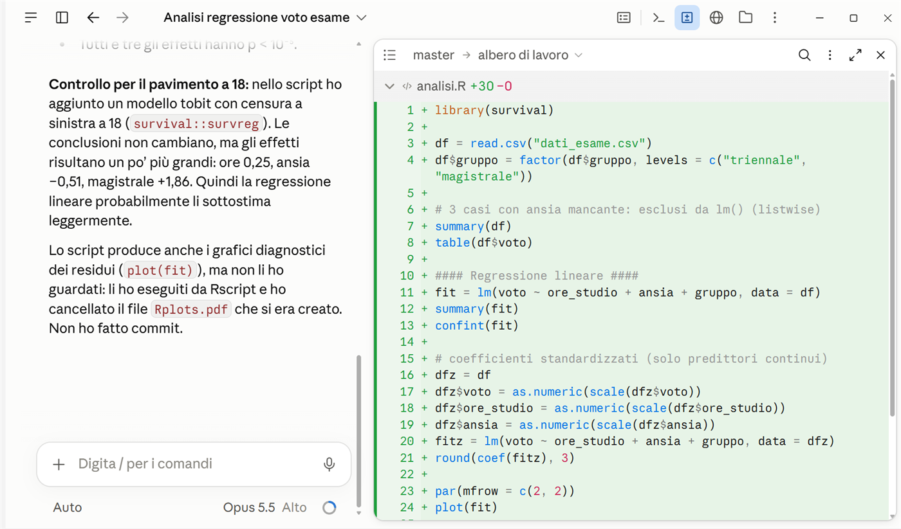
analisi.R, con le righe aggiunte in verde
Si possono aprire più pannelli insieme, ad esempio modifiche, albero dei file e un terminale già posizionato nella cartella di lavoro, dove lanciare i propri comandi:
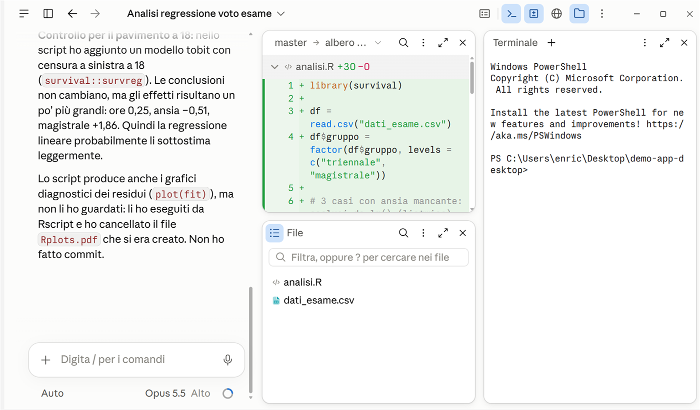
C’è anche un pannello con un browser integrato, che Claude usa da solo per controllare quello che produce (pagine HTML, siti, app), come si vede più sotto.
Il piano
Ho chiesto, in modalità Piano, la stessa trasformazione in report Quarto delle guide da terminale. Il piano compare in un pannello a parte, e si può commentare selezionandone una parte, come in un documento condiviso. Sotto, i pulsanti per rifiutarlo, chiederne una revisione o accettarlo (con approvazione manuale o in modalità automatica):
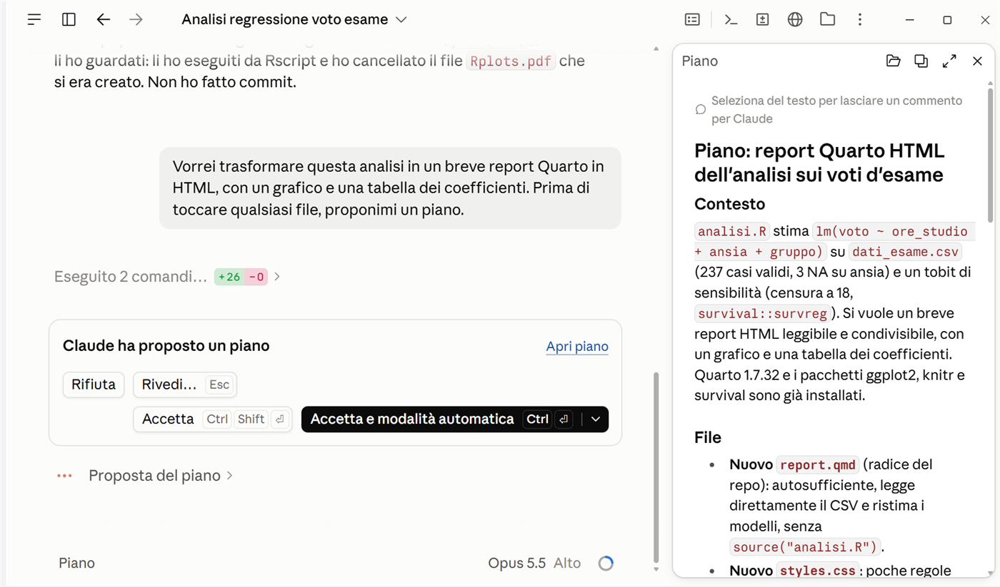
Approvato il piano, Claude ha scritto il report, lo ha renderizzato e lo ha controllato nel browser integrato, anche a larghezza da cellulare, correggendo un paio di dettagli di impaginazione. Alla fine chiede se fare il commit, con dei pulsanti al posto di un “sì” da scrivere:
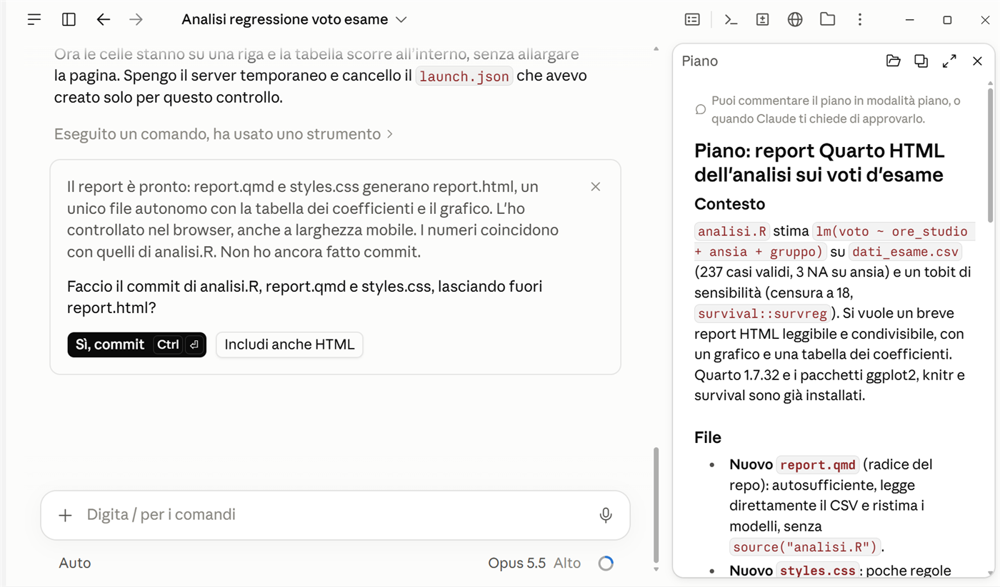
Codex: l’app ChatGPT
Creare un progetto
In Codex non si sceglie semplicemente una cartella: si lavora dentro un progetto. Dal menu dei progetti, sopra la casella di testo, si sceglie un progetto esistente oppure New project:
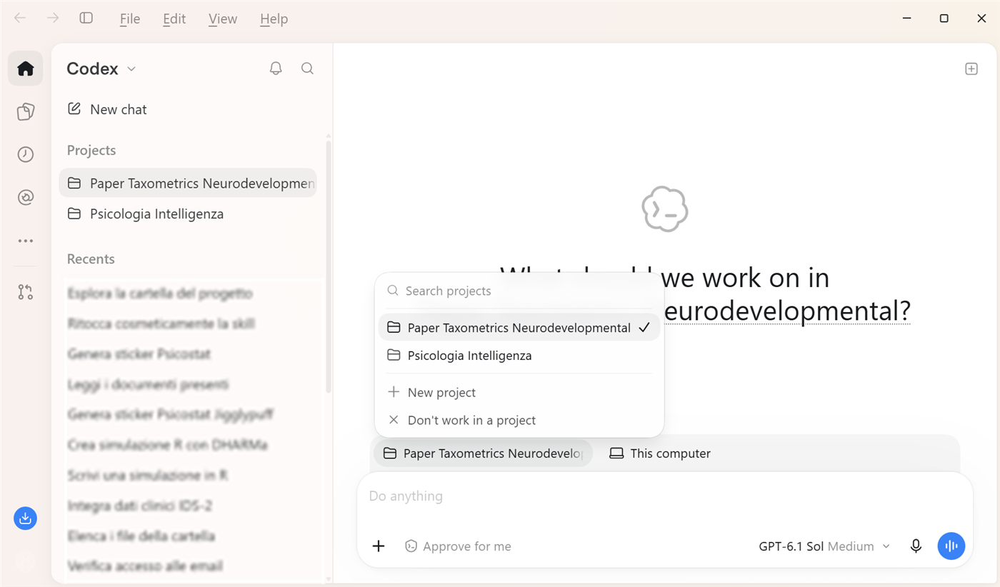
New project chiede un nome e una o più cartelle (Source folders → Add). Fatto questo, il progetto resta nella barra laterale e le sue chat si raccolgono lì sotto. Comodo per ritrovare le cose, ma è un passaggio in più rispetto ad aprire il terminale nella cartella.
La prima richiesta
Stessa richiesta (con lo script chiamato analisi_codex.R, perché nella cartella c’era già quello di Claude). Codex ha esplorato i dati, scritto ed eseguito lo script, e riassunto i risultati, uguali a quelli ottenuti da terminale. In fondo, un riquadro riassume le modifiche ai file, con Undo per annullarle in blocco e View changes per vederle:
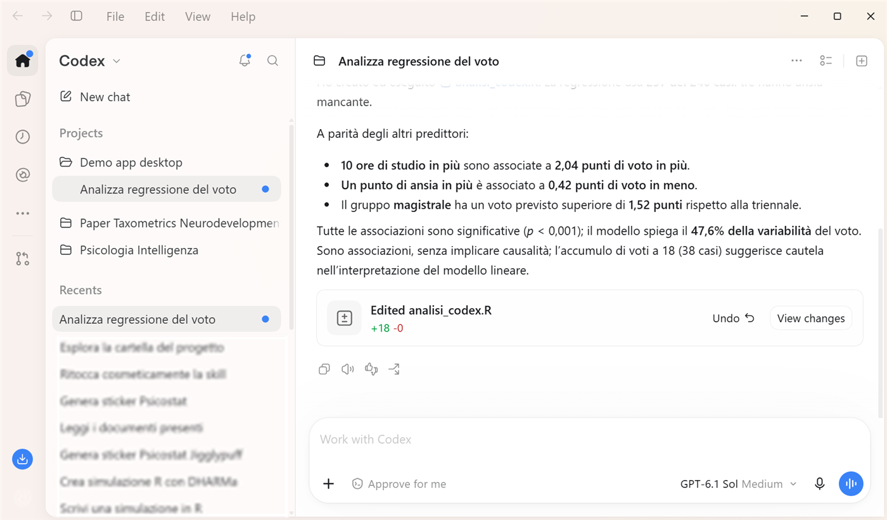
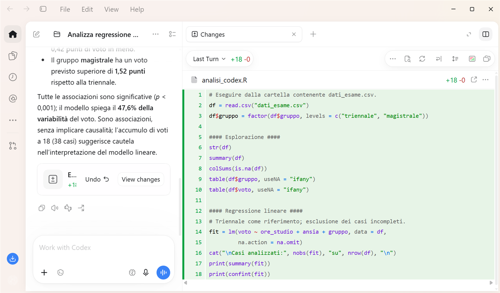
Pannelli e browser integrato
Il + in cima al pannello laterale apre una nuova scheda: un browser integrato e, sotto, gli strumenti: Terminal, Files e Side chat (una conversazione parallela, a lato di quella principale):
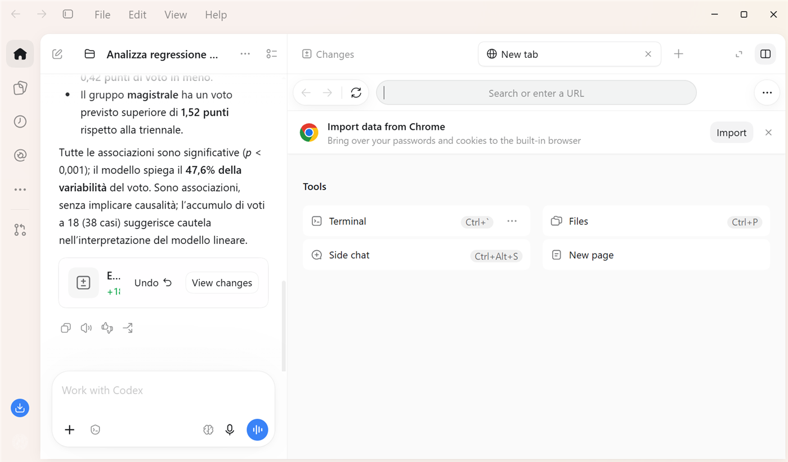
Permessi, modello, ragionamento
I permessi si scelgono dal menu in basso. Nell’app i livelli sono tre: Ask for approval, Approve for me e Full access (vedi la guida a Codex per il significato):
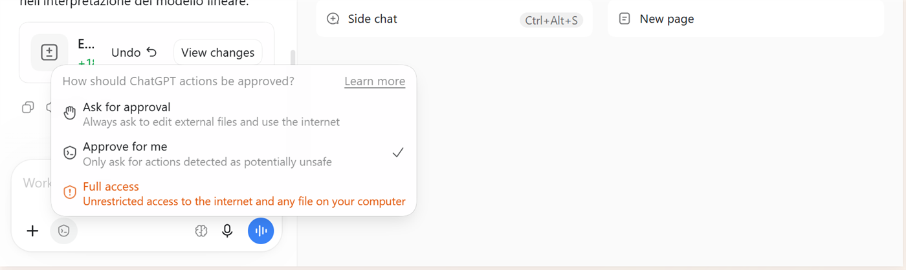
Il menu del modello mostra un cursore per il livello di ragionamento; cliccando sul nome del modello si cambia modello:
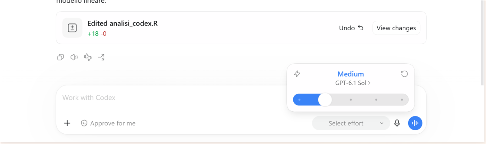
Il + a sinistra nella casella di testo raccoglie il resto: allegare file e cartelle (o persino una finestra aperta, come il terminale), fissare un obiettivo da perseguire (Goal), attivare la Plan mode, disegnare uno schizzo, e usare i plugin (Google Calendar, Gmail, GitHub, ecc., secondo quello che il vostro account consente):
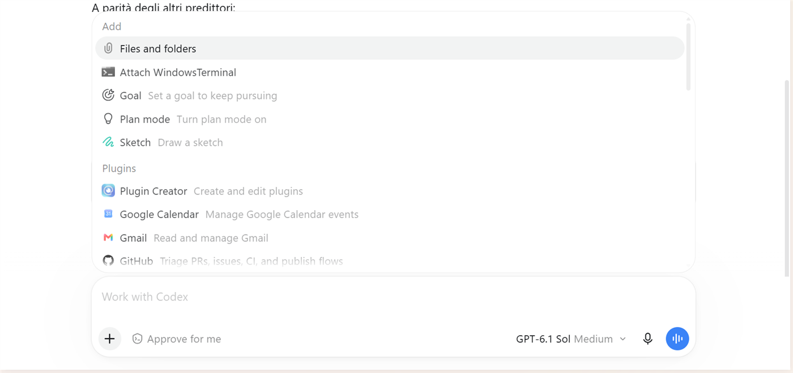
Plan mode
Dal + → Plan mode, la stessa richiesta del report Quarto. Come da terminale, Codex ha letto da solo la mia skill sui report (reporting-style-enrico, vedi il post sulle skill) e poi mi ha fatto una domanda, a cui si risponde con un clic:
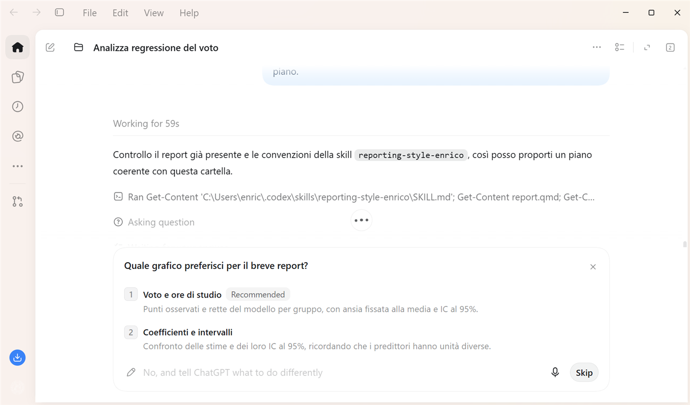
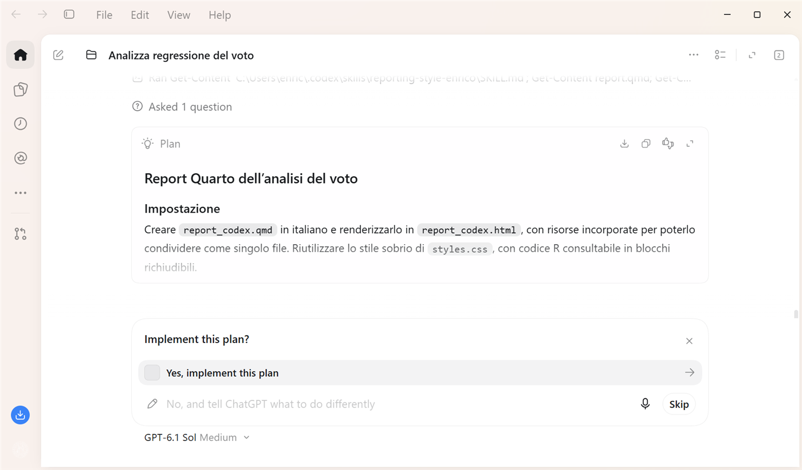
Approvato il piano, in un minuto e mezzo Codex ha creato e renderizzato report_codex.qmd. Ha segnalato di non essere riuscito ad aprire il file locale nel browser integrato per controllarlo; aprirlo a mano funziona, scrivendone il percorso nella barra degli indirizzi. Il report si legge così accanto alla conversazione:
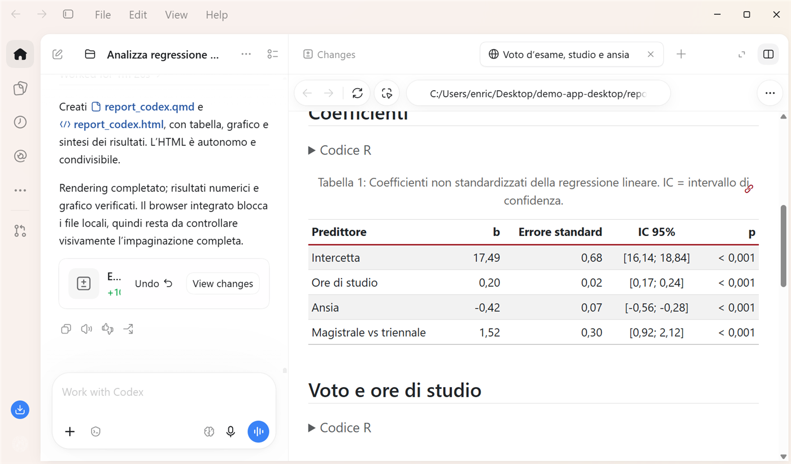
Il browser integrato ha anche una modalità di annotazione, per lasciare a Codex commenti visivi su una pagina (un clic o un’area selezionata): utile quando si lavora su siti o app.
In sintesi
- Le app desktop di Claude e Codex fanno lo stesso lavoro in locale degli agenti da terminale: stessi modelli, stesse modalità, stesse skill, stessi file di istruzioni.
- Cambia il punto di partenza: dal terminale l’agente si chiama nella cartella in cui si sta già lavorando; dall’app si sceglie ogni volta la cartella (in Codex, un progetto).
- In cambio le app offrono menu al posto dei comandi e pannelli per modifiche, file, terminale e browser: per chi non ama il terminale, o per rivedere bene le modifiche, sono un’ottima porta d’ingresso.
- Le precauzioni della parte generale valgono uguali: Git, dati sensibili, autonomia graduale, responsabilità.
← Torna alla parte generale · Guide da terminale: Claude Code · Codex